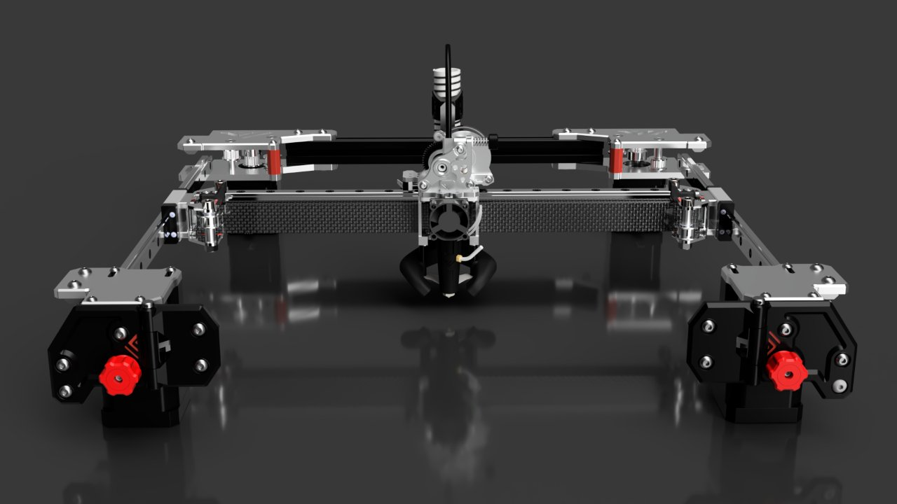
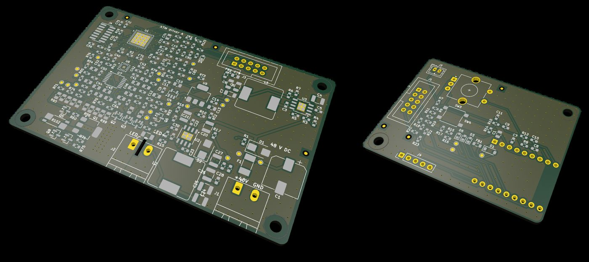
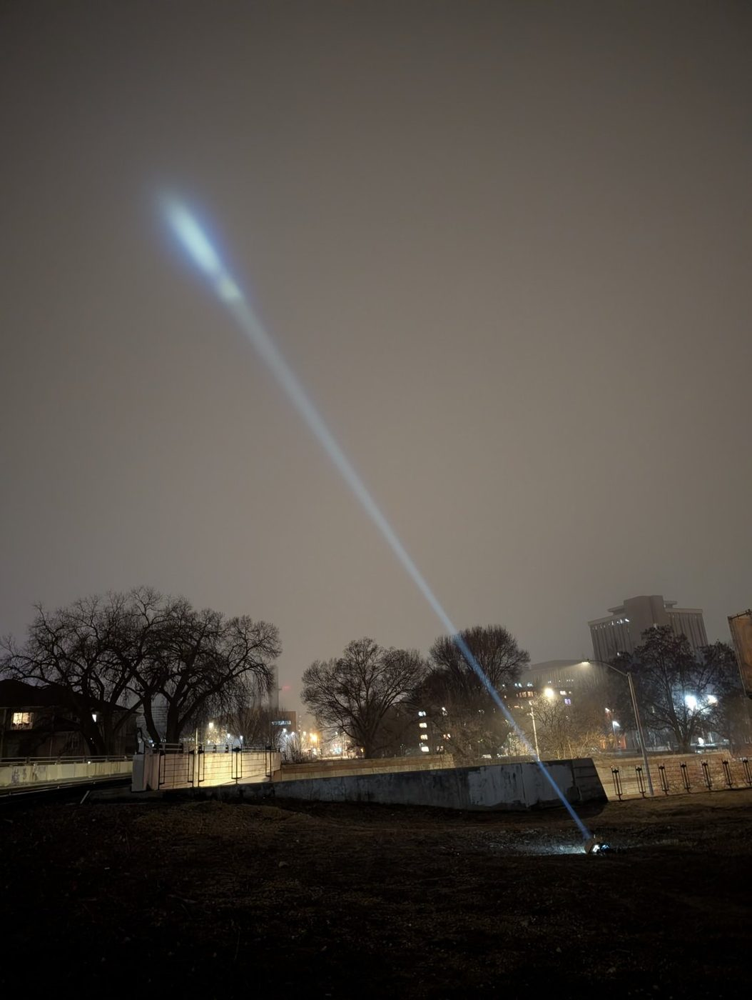
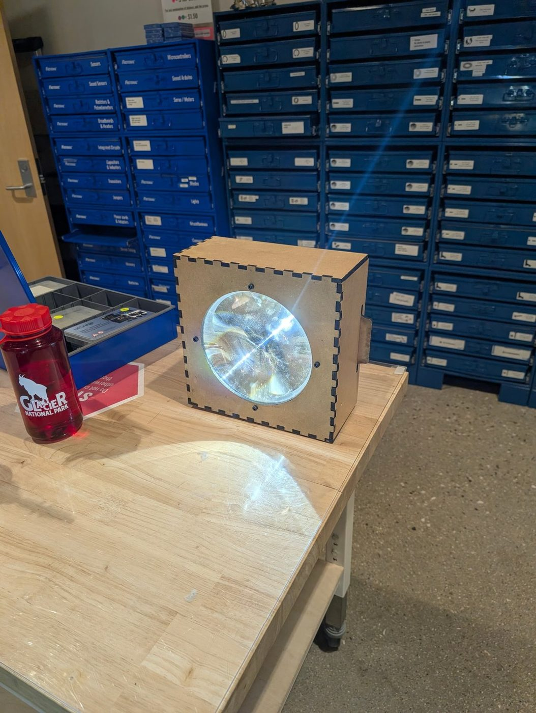

Electrical engineering student at the University of Wisconsin–Madison (Class of 2029) who designs, builds and ships hardware: LED power electronics, optics, mechanical assemblies used in an open-source 3D printer, and camera-based 3D capture pipelines.
2× 1st place · BudgetLightForum Old LumensDesigns shipping in the VzBoT kitUW–Madison EE ’29
Power & LED electronicsConstant-current drivers, dimming, thermal design
Mechanical designParametric Onshape models; laser-cut, 3D-printed and machined parts
Hands-on fabricationFine-pitch SMD, QFN and reflow soldering; machine-shop work
MeasurementPhotometric characterization to ANSI FL1; data in Excel and Python
Featured projects
VzBoT AWD CoreXY 3D printer — homing system & toolhead assemblies
2021 – presentShipping in official kit
My homing system and toolhead designs ship in the official VzBoT kit and release, used by builders of this open-source high-speed printer (rated to 2,000 mm/s and 65,000 mm/s²).
Joined the project in its early stages (around 2021) and still contribute
Designed the homing system and toolhead assemblies used in the release; paid for contract design work on a freelance basis
Built the official printer-serialization program, registering 400+ verified builds across a 10,000-member community
One of five moderators: reviewed 20+ community design contributions and provided build support

VzBoT AWD gantry and toolhead as shipped in the official kit (render: VzBoT documentation).
Flicker-free, four-decade LED driver for stage fixtures
Designed · build pendingKiCad 9STM32G431ESPHome
A two-board driver for four 5,000 lm Xicato XTM stage fixtures that keeps the LED on pure DC from 1.4 A down to 5 µA (0.0004% of full output). Fades run smoothly to black, and there is no PWM for a 240 fps phone camera to turn into bands.

Board A (driver, 4-layer, 206 parts) and Board B (controller, 42 parts), rendered from KiCad.
5 µA–1.4 ADC at every level
<1%flicker target, 100 Hz–20 kHz
0 / 0ERC / DRC errors, both boards
97,146firmware host-test checks passing
Architecture. A tracking buck converter only supplies voltage, holding the LED anode about 1 V above what the current sinks need. Four parallel linear sinks set the current, with 0.1, 1, 10 and 100 Ω shunts so each covers one decade at the same 14–140 mV sense voltage, making every range equally precise. An STM32G431 runs fades at 4 kHz and raises the buck voltage before raising the current. A socketed ESP32-S3 on ESPHome handles Wi-Fi, a rotary encoder, and authenticated fixture-to-fixture sync over ESP-NOW.
Decision at the design gate
Why
Replace PWM on the bottom decade with a fourth DC range
Off-channel leakage and LED cathode capacitance make PWM no more accurate, while it adds camera banding
Synchronous buck locked at 400 kHz instead of pulse-skipping
At 140 µA the LED's dynamic resistance is about 4.6 kΩ, so 20 mV of ripple alone would cause about 0.9% flicker
MCU feed-forward on the buck voltage instead of a slow analog loop
A snap from 10% to full would starve the sink until a slow loop caught up, then overshoot
Prime the incoming channel and blend currents in the log domain
Time-domain simulation showed a plain crossfade dipping the light 17% on a 1 s fade; the fix brings the worst case to 1.5% (1 s) and 0.14% (10 s)
Make the dimming floor a firmware setting
States the assumed low-current LED behavior up front, so a wrong assumption is a setting change, not a board respin
Socket a ready-made ESP32-S3 board instead of a bare module
Removes 17 parts and a 0.5 mm-pitch USB-C connector, and makes the controller a ten-second swap
Verified so far. Every design value comes from a script that asserts the limits (loop phase margins, buck on-times, voltage ceiling). An independent review caught board-revision-level errors before ordering, including a buck-enable pin that the STM32's bootloader drives high, which would have started the converter during reflashing.
Status. Fabrication, bring-up and flicker measurement have not started, so all figures above are design or simulated values.
A 1.6 million candela, roughly 2,000 lm handheld spotlight with a laser-cut MDF body generated from a fully parametric Onshape model. Designed and built in December 2025, alongside finals.


Peak intensity
1.6 Mcd (≈2.5 km ANSI FL1 throw)
Output
≈2,000 lm
LED
Luminus SFT-42R, 6500 K, on a copper-core board
Optic
200 mm Fresnel lens, 70 mm focal length
Drive
8.5 A constant-current buck (≈60% of the LED's maximum)
Battery
3S1P Samsung 50E 21700; calculated runtime 3 h
Protection
Arduino Nano monitoring each cell (3.00–4.25 V), switching the pack through an automotive relay
Body
1/4" MDF cut on a 150 W CO₂ laser; tower CPU cooler as heatsink
Lens choice by geometry. At 70 mm the LED's emission cone just fills the 200 mm lens: longer would spill light past the edge, shorter would leave the outer lens unused.
Focus is millimeter-critical. A 1.6 mm error visibly converges then diverges the beam, so the LED and lens sit in laser-cut centering rings and focus is set with spacers.
Parametric CAD. Lens diameter, focal length, material and PCB thickness all drive the model, so it scales to other lenses. A laser-cut jig marked the heatsink holes.
Power path. With every cell in range and the button pressed, the Nano switches a MOSFET that energizes the relay coil (with flyback diode). I substituted one relay for the two MOSFETs in the reference schematic.
What I'd change. I missed the buck module's 8.5 A limit at selection, capping output at ~60%. The wooden LED mount causes beam artifacts that sheet metal would avoid.
A friend on the Badger Solar Racing team guided the battery-protection design and donated the cells and relay; the protection firmware was drafted with ChatGPT and reviewed by both of us.
A portable searchlight built around a 250 W UHP projector lamp salvaged with its ballast from a second-hand projector, measured at roughly 9.2 million candela and 17,000 lumens (about 6 km ANSI FL1 range). Won first choice of prizes across all three categories.
An apartment building lit from 1.2 km away.
Built a 340 V DC supply from 240 V AC (bridge rectifier, 470 µF/400 V capacitor, bleeder resistor) after finding nothing affordable off the shelf
Reverse-engineered the projector ballast's UART-controlled start-up and safety checks so it runs standalone
Characterized the beam with a lux meter: measured a 2° divergence from the parabolic reflector and computed intensity and throw
Packaged in a briefcase with a 600 W pure-sine power station for the contest's mobile requirement
A local, open-source pipeline that turns DSLR photo sets into 3D scenes you can fly through. The first full result is a scan of my freshman dorm room, viewable in the browser on SuperSplat.
Capture: about 700 photos on a Canon 5D Mark IV over roughly 90 minutes, one deliberate frame per position for maximum sharpness.
Pipeline: camera poses solved in RealityScan (COLMAP/GLOMAP as the open-source alternative), then trained in LichtFeld Studio, which I build from source on Windows with MSVC, vcpkg and CUDA, resolving cuDNN DLL placement, shell-environment and clang-cl/Vulkan dependency failures. Cut reconstruction time 3×.
Diagnosing artifacts: floating "shards" came from regions seen by too few views; a blown-out window from a fixed exposure past the sensor's range; the mirror became a doorway into a false room. Fixes: more angles, controlled lighting, and an outlier-removal and densification plugin.
Next: MoGe-2 monocular depth and normal maps in preprocessing for depth-supervised training.
Embedded, software & measurement
MattGPT
A 7.5M-parameter character-level GPT built from scratch in PyTorch and trained on ~74k of my own Discord messages. Validation loss 1.44 nats/char; live demo on Hugging Face.
Produced 250 g of 1.75 mm filament within ±0.1 mm from recycled PET bottles through a 140 °C PID-controlled die, with stepper-held pull speed. Earned an Arkwright Engineering Scholarship.
Photometric measurement workflow
Computes candela and lumens from lux-meter readings; characterized a B35AM flashlight across all modes and calculated ANSI FL1 throw.
Excel · Bosch GLM 20 rangefinder
Keychain now-playing display
Shows the currently playing Spotify track on a keychain-sized screen over BLE from an Android companion app.
ESP32-S3 AMOLED · Onshape · resin
Colour-based photo cropper
Finds and crops regions of a target colour in photos.
Python · adaptive HSV · blob selection
Recognition & skills
1st place, Machine Made — 13th annual Old Lumens contest (2025), Fresnel-lens spotlight
1st place, Hand Made — 12th annual Old Lumens contest (2024), mercury short-arc searchlight; first choice of prizes across all three categories
Arkwright Engineering Scholarship (UK national award)
Designs shipping in the official VzBoT 3D printer kit
Electronics
Constant-current LED drivers, buck converters, linear current sinks, ESP32 and ESPHome, STM32, Arduino, KiCad, PCBs for JLCPCB
Fabrication
Fine-pitch SMD, QFN and reflow soldering; laser cutting; resin and FDM printing; machine shop
CAD & mechanical
Onshape parametric modeling, SolidWorks, thermal and liquid-cooling design, optics integration